library(tidyverse)
library(readxl)The Solow Model on Japan Economic Growth
To run this qmd file, one must put a spreadsheet (Model_Inputs) of Professor Erin Cottle Hunt’s into the same folder where one put this qmd file.
This project is based on an Excel project for Professor Erin Cottle Hunt’s ECON 314 Macroeconomic Theory.
This project uses macroeconomic data from FRED. Using counterfactual analysis and simulation, this project demonstrates that in the Solow model, total factor productivity is the element that mainly drives (Japan) economic growth trend, and provides visualizations. It also incorporates a very brief economic history of post-World-War-II Japan.
There is a tutorial in R and a tutorial in Python, giving the same computations and visualizations. The only exception is part of Section IV, a shooting and binary search algorithm, which searches for a parameter that makes two curves converge. This algorithm is included in the Python version only.
The R version requires data wrangling and data visualization skills from MATH 141 Intro Statistics (which is a required course for the Quantitative Economics major), as well as understanding of recursive functions and loops. For Quantitative Economics majors, it may be an easier read. There is a qmd file and a knitted html file.
The Python version requires Python knowledge that is not taught in CSCI 121 Computer Science I. Therefore, there is more scaffolding. Nevertheless, when it comes to computation, Python is a language far more versatile than R, and it runs faster. In addition, to my knowledge, more economic coding is done in Python than in R.
Table of Contents
Section I. Comparative Analysis of Japan and United States Post World War II Economic Growth
Section II. The Solow Model of Japan Post-World-War-II Economic Growth
Section III. Counterfactual Solow Models of Japan Post World War II Economic Growth
Section IV. What Post-1970 TFP Growth Rate Japan Needs to Have to Make Its Real GDP per Capita Converge to That of USA
Load R libraries.
Section I. Comparative Analysis of Japan and United States Post World War II Economic Growth
We choose Real GDP per Capita to be the indicator of economic growth.
Data
We use Real GDP and Population to calculate Real GDP per Capita.
Real GDP
There are multiple Real GDP data for both Japan and United States in the FRED database. We look at them and compare.
The data series below are Real GDP at Constant National Prices for United States and Real GDP at Constant National Prices for Japan. Both are provided by Groningen Growth and Development Centre, and that they are provided by the same organization makes the data good for cross-country comparative analysis. The data series are annual.
The series’ codes in the FRED database are RGDPNAUSA666NRUG and RGDPNAJPA666NRUG, respectively.
To obtain the URLs from which to load the CSV format data, find the page of the data series, find “Download”, find “CSV (data)”, and copy the link address for “CSV (data)”.
When loading, modify the URL by resetting the current dates to 2099/12/31 so that the data is always up-to-date.
The current data series end at 2023.
usa_rgdp_groningen <- read.csv("https://fred.stlouisfed.org/graph/fredgraph.csv?bgcolor=%23e1e9f0&chart_type=line&drp=0&fo=open%20sans&graph_bgcolor=%23ffffff&height=450&mode=fred&recession_bars=on&txtcolor=%23444444&ts=12&tts=12&width=1320&nt=0&thu=0&trc=0&show_legend=yes&show_axis_titles=yes&show_tooltip=yes&id=RGDPNAUSA666NRUG&scale=left&cosd=1950-01-01&coed=2099-12-31&line_color=%234572a7&link_values=false&line_style=solid&mark_type=none&mw=3&lw=3&ost=-99999&oet=99999&mma=0&fml=a&fq=Annual&fam=avg&fgst=lin&fgsnd=2099-12-31&line_index=1&transformation=lin&nd=1950-01-01")
jpa_rgdp_groningen <- read.csv("https://fred.stlouisfed.org/graph/fredgraph.csv?bgcolor=%23ebf3fb&chart_type=line&drp=0&fo=open%20sans&graph_bgcolor=%23ffffff&height=450&mode=fred&recession_bars=off&txtcolor=%23444444&ts=12&tts=12&width=1320&nt=0&thu=0&trc=0&show_legend=yes&show_axis_titles=yes&show_tooltip=yes&id=RGDPNAJPA666NRUG&scale=left&cosd=1950-01-01&coed=2099-12-31&line_color=%230073e6&link_values=false&line_style=solid&mark_type=none&mw=3&lw=3&ost=-99999&oet=99999&mma=0&fml=a&fq=Annual&fam=avg&fgst=lin&fgsnd=2099-12-31&line_index=1&transformation=lin&nd=1950-01-01")If we want to have data series that end at some year closer to the present (2026), use the data series Real Gross Domestic Product and Real Gross Domestic Product for Japan. The former is provided by U.S. Bureau of Economic Analysis, and the latter by Cabinet Office of Japan. The data series are both quarterly.
The series’ names in the FRED database are GDPC1 and JPNRGDPEXP, respectively.
This Japan data series starts at 1994, and this USA data series starts at 1994. When we merge two datasets containing different series, the merge function keeps only entries with the same date. Therefore, if we merge the USA series and the Japan series, the start year will be 1994 and the end year will be 2026.
usa_rgdp_bureau <-read.csv("https://fred.stlouisfed.org/graph/fredgraph.csv?bgcolor=%23ebf3fb&chart_type=line&drp=0&fo=open%20sans&graph_bgcolor=%23ffffff&height=450&mode=fred&recession_bars=on&txtcolor=%23444444&ts=12&tts=12&width=1320&nt=0&thu=0&trc=0&show_legend=yes&show_axis_titles=yes&show_tooltip=yes&id=GDPC1&scale=left&cosd=1947-01-01&coed=2099-12-31&line_color=%230073e6&link_values=false&line_style=solid&mark_type=none&mw=3&lw=3&ost=-99999&oet=99999&mma=0&fml=a&fq=Quarterly&fam=avg&fgst=lin&fgsnd=2099-12-31&line_index=1&transformation=lin&nd=1947-01-01")
jpa_rgdp_cabinet <-read.csv("https://fred.stlouisfed.org/graph/fredgraph.csv?bgcolor=%23ebf3fb&chart_type=line&drp=0&fo=open%20sans&graph_bgcolor=%23ffffff&height=450&mode=fred&recession_bars=off&txtcolor=%23444444&ts=12&tts=12&width=1320&nt=0&thu=0&trc=0&show_legend=yes&show_axis_titles=yes&show_tooltip=yes&id=JPNRGDPEXP&scale=left&cosd=1994-01-01&coed=2099-12-31&line_color=%230073e6&link_values=false&line_style=solid&mark_type=none&mw=3&lw=3&ost=-99999&oet=99999&mma=0&fml=a&fq=Quarterly&fam=avg&fgst=lin&fgsnd=2099-12-31&line_index=1&transformation=lin&nd=1994-01-01")To convert the above two data series from quarterly to annual, use the following code. Or, we can just merge the two data series with some annual data series.
usa_rgdp_bureau <- usa_rgdp_bureau %>%
mutate(observation_date = as_date(observation_date)) %>%
mutate(month = month(observation_date)) %>%
filter(month == 01) %>%
select(-month)
jpa_rgdp_cabinet <- jpa_rgdp_cabinet %>%
mutate(observation_date = as_date(observation_date)) %>%
mutate(month = month(observation_date)) %>%
filter(month == 01) %>%
select(-month)Population
The following data series are from Groningen Growth and Development Centre and end at 2023.
The series’ codes in the FRED database are POPTTLUSA148NRUG (or Population for United States) and POPTTLJPA148NRUG (or Population for Japan), respectively.
usa_pop_groningen <- read.csv("https://fred.stlouisfed.org/graph/fredgraph.csv?bgcolor=%23ebf3fb&chart_type=line&drp=0&fo=open%20sans&graph_bgcolor=%23ffffff&height=450&mode=fred&recession_bars=on&txtcolor=%23444444&ts=12&tts=12&width=1320&nt=0&thu=0&trc=0&show_legend=yes&show_axis_titles=yes&show_tooltip=yes&id=POPTTLUSA148NRUG&scale=left&cosd=1950-01-01&coed=2099-12-31&line_color=%230073e6&link_values=false&line_style=solid&mark_type=none&mw=3&lw=3&ost=-99999&oet=99999&mma=0&fml=a&fq=Annual&fam=avg&fgst=lin&fgsnd=2099-12-31&line_index=1&transformation=lin&nd=1950-01-01")
jpa_pop_groningen <- read.csv("https://fred.stlouisfed.org/graph/fredgraph.csv?bgcolor=%23ebf3fb&chart_type=line&drp=0&fo=open%20sans&graph_bgcolor=%23ffffff&height=450&mode=fred&recession_bars=off&txtcolor=%23444444&ts=12&tts=12&width=1320&nt=0&thu=0&trc=0&show_legend=yes&show_axis_titles=yes&show_tooltip=yes&id=POPTTLJPA148NRUG&scale=left&cosd=1950-01-01&coed=2099-12-31&line_color=%230073e6&link_values=false&line_style=solid&mark_type=none&mw=3&lw=3&ost=-99999&oet=99999&mma=0&fml=a&fq=Annual&fam=avg&fgst=lin&fgsnd=2099-12-31&line_index=1&transformation=lin&nd=1950-01-01")The following data series are from World Bank. They start at 1960 and end at 2025.
The series’ codes in the FRED database are POPTOTUSA647NWDB (or Population, Total for United States) and POPTOTJPA647NWDB (or Population, Total for Japan), respectively.
usa_pop_world_bank <- read.csv("https://fred.stlouisfed.org/graph/fredgraph.csv?bgcolor=%23ebf3fb&chart_type=line&drp=0&fo=open%20sans&graph_bgcolor=%23ffffff&height=450&mode=fred&recession_bars=on&txtcolor=%23444444&ts=12&tts=12&width=1320&nt=0&thu=0&trc=0&show_legend=yes&show_axis_titles=yes&show_tooltip=yes&id=POPTOTUSA647NWDB&scale=left&cosd=1960-01-01&coed=2099-12-31&line_color=%230073e6&link_values=false&line_style=solid&mark_type=none&mw=3&lw=3&ost=-99999&oet=99999&mma=0&fml=a&fq=Annual&fam=avg&fgst=lin&fgsnd=2099-12-31&line_index=1&transformation=lin&nd=1960-01-01")
jpa_pop_world_bank <- read.csv("https://fred.stlouisfed.org/graph/fredgraph.csv?bgcolor=%23ebf3fb&chart_type=line&drp=0&fo=open%20sans&graph_bgcolor=%23ffffff&height=450&mode=fred&recession_bars=off&txtcolor=%23444444&ts=12&tts=12&width=1320&nt=0&thu=0&trc=0&show_legend=yes&show_axis_titles=yes&show_tooltip=yes&id=POPTOTJPA647NWDB&scale=left&cosd=1960-01-01&coed=2025-01-01&line_color=%230073e6&link_values=false&line_style=solid&mark_type=none&mw=3&lw=3&ost=-99999&oet=99999&mma=0&fml=a&fq=Annual&fam=avg&fgst=lin&fgsnd=2099-12-31&line_index=1&transformation=lin&nd=1960-01-01")Data Choice
We use the Groningen data series for comparative analysis, both because we want to analyse the growth trends after World War II and these data starts right after World War II, and because they are from the same organization and are therefore more consistent with each other.
Data Cleaning
To document the relationship between Year and Real GDP per Capita of USA and Japan, we merge all requisite data into one dataset.
df_1 <- merge(usa_pop_groningen, jpa_pop_groningen)
df_1 <- merge(df_1, usa_rgdp_groningen)
df_1 <- merge(df_1, jpa_rgdp_groningen)Rename the columns for better comprehension.
colnames(df_1) <- c("year", "pop_usa", "pop_jpa", "rgdp_usa", "rgdp_jpa")Because we want to have an annual data series, reformat year into year-only-format.
df_1 <- df_1 %>% mutate(year = year(year))Calculation
Calculate Real GDP per Capita.
df_1 <- df_1 %>%
mutate(rgdpc_usa = rgdp_usa/pop_usa,
rgdpc_jpa = rgdp_jpa/pop_jpa)Calculate the ratio between Real GDP per Capita of Japan and Real GDP per Capita of United States.
df_1 <- df_1 %>%
mutate(ratio = rgdpc_jpa/rgdpc_usa)Comparative Analysis Plots
Plot Real GDP per Capita of USA and Japan.
We use log scale to better exhibit Real GDP per Capita growth rate.
Real_GDP_per_Capita_of_USA_and_Japan <-
df_1 %>%
ggplot(aes(x = year)) +
geom_line(aes(y = rgdpc_usa, color = "USA")) +
geom_line(aes(y = rgdpc_jpa, color = "Japan")) +
scale_color_manual(values = c("USA" = "red", "Japan" = "blue"), name = "Country") +
labs(x = "Year",
y = "Real GDP per Capita",
title = "Real GDP per Capita of USA and Japan") +
scale_y_log10(limits = c(2500, 80000),
breaks = c(seq(20000, 80000, by = 20000))) +
scale_x_continuous(limits = c(1950, 2023),
breaks = c(seq(1950, 2025, by = 5)),
minor_breaks = NULL) +
theme_bw()
Real_GDP_per_Capita_of_USA_and_Japan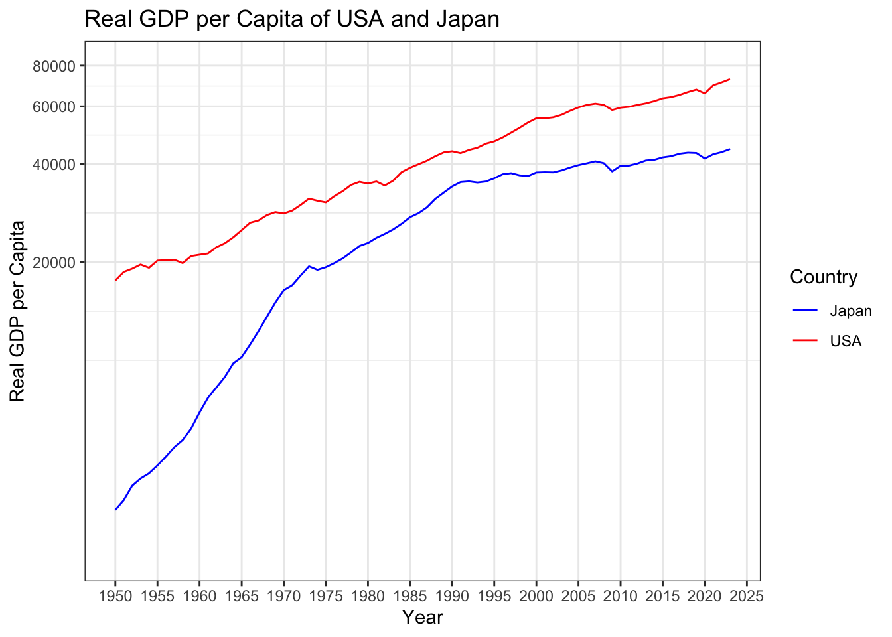
Plot the ratio between Real GDP per Capita of Japan and Real GDP per Capita of United States.
Ratio_between_Real_GDP_per_Capita_of_Japan_and_Real_GDP_per_Capita_of_USA <-
df_1 %>%
ggplot(aes(x = year)) +
geom_line(aes(y = ratio)) +
labs(x = "Year",
y = "Ratio",
title = "Ratio between Real GDP per Capita of Japan and Real GDP per Capita of USA") +
scale_y_continuous(limits = c(0, 1),
breaks = c(seq(0, 1, by = 0.2))) +
scale_x_continuous(limits = c(1950, 2023),
breaks = c(seq(1950, 2025, by = 5)),
minor_breaks = NULL) +
theme_bw()
Ratio_between_Real_GDP_per_Capita_of_Japan_and_Real_GDP_per_Capita_of_USA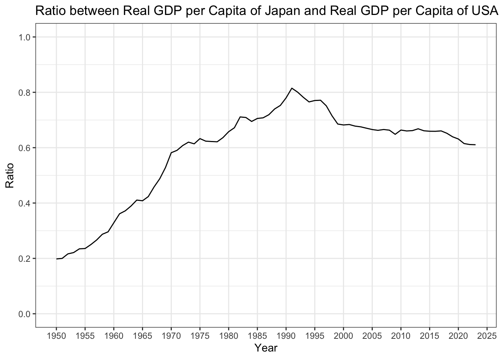
Conclusion
Japan’s Real GDP per Capita is always less than USA’s Real GDP per Capita.
From 1950 to 1970, Japan experienced a post-WWII economic bloom, and its Real GDP per Capita grew very fast, faster than that of USA.
From 1970 to 1990, Japan experienced the Bubble Economy, and its Real GDP per Capita grew still faster than that of USA.
In 1990, Japan’s Economic Bubble burst. As a result, its Real GDP per Capita growth slowed down significantly. Its Real GDP per Capita grew slower than that of USA.
We see some parellel kinks in both USA and Japan’s Real GDP per Capita post-millennium, especially one in 2008 (Financial Crisis) and 2020 (Covid). These parellel kinks are because of the globalization of world economy.
From 1950 to 1990, the ratio of Japan’s Real GDP per Capita to USA’s Real GDP per Capita grew. It dropped in the 1990s, when Japan’s Bubble burst. It is slowly but steadily declining from 2000 onwards, indicating that USA is growing faster than Japan post-millennium.
Section II. The Solow Model of Japan Post-World-War-II Economic Growth
In the Solow Model, a country’s economic growth is propelled by Total Factor Productivity (\(A\)), Capital (\(K\)), and Labor (which is related to but is not the same as Population) (\(N\)). Growth is also influenced by Savings Rate, and Government Spending as a Fraction of Output.
In this section, we look at the trends for Population Growth Rate (which is similar to but is not the same as Labor Growth Rate) (\(x\)), Savings Rate (\(s\)), Government Spending as a Fraction of Output (\(\psi\)), and TFP Growth Rate (\(\phi\)) of post-WWII Japan, and predict Japan’s Output per Capita based on the Solow Model.
Data
The data for \(x\), \(s\), \(\psi\), and \(\phi\) are provided by Professor Erin Cottle Hunt in an Excel spreadsheet. Similar data, especially that of TFP (growth rate) can be found in FRED or World Bank database, but the data do not extend as early as 1950, which is the start year of Professor Erin Cottle Hunt’s data.
In the Excel file, we delete the second row, which has no observation.
model_inputs <- read_excel("Model_Inputs.xlsx")Data Cleaning
Rename the columns.
colnames(model_inputs) <- c("year", "x", "s", "psi", "phi")Convert the inputs to numeric format.
model_inputs <- model_inputs %>%
mutate(x = as.numeric(x),
s = as.numeric(s),
psi = as.numeric(psi),
phi = as.numeric(phi))merge model_inputs with the Real GDP data for Section I.
df_2 <- merge(df_1, model_inputs)Exploratory Data Analysis
We make the following plots to exhibit trends in \(x\), \(s\), \(\psi\), and \(\phi\) of Japan post WWII.
Population_Growth_Rate_Japan <-
df_2 %>%
ggplot(aes(x = year)) +
geom_line(aes(y = x)) +
labs(x = "Year",
y = "Population Growth Rate",
title = "Population Growth Rate of Japan") +
scale_y_continuous(limits = c(-0.01, 0.02),
breaks = c(seq(-0.01, 0.02, by = 0.01))) +
scale_x_continuous(limits = c(1950, 2019),
breaks = c(seq(1950, 2025, by = 5)),
minor_breaks = NULL) +
theme_bw()
Population_Growth_Rate_Japan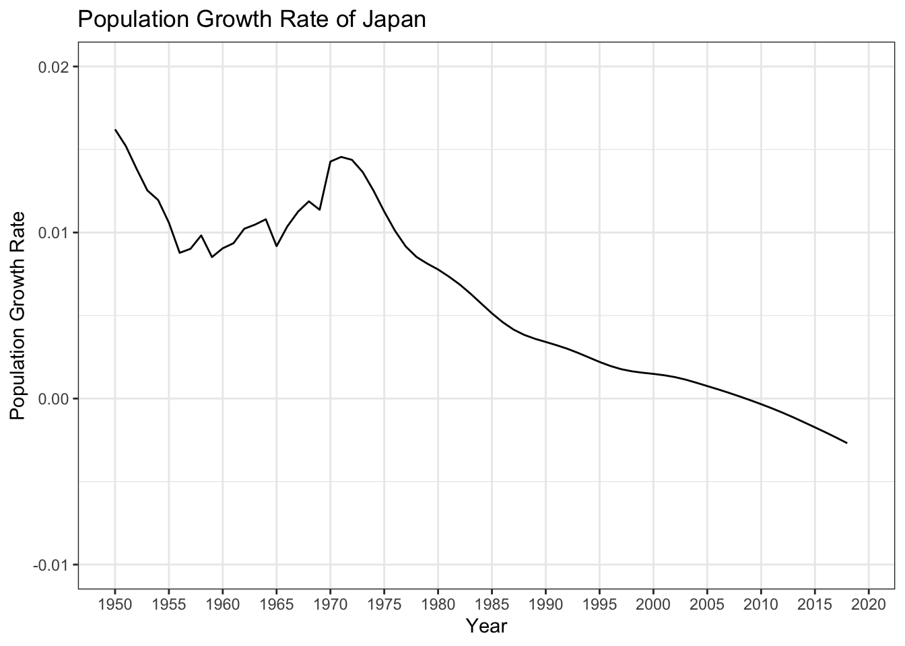
Savings_Rate_Japan <-
df_2 %>%
ggplot(aes(x = year)) +
geom_line(aes(y = s)) +
labs(x = "Year",
y = "Savings Rate",
title = "Savings Rate of Japan") +
scale_y_continuous(limits = c(0, 0.5),
breaks = c(seq(0, 0.5, by = 0.1))) +
scale_x_continuous(limits = c(1950, 2019),
breaks = c(seq(1950, 2025, by = 5)),
minor_breaks = NULL) +
theme_bw()
Savings_Rate_Japan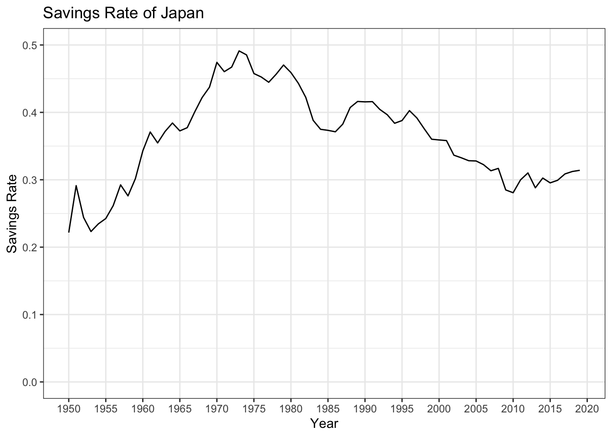
Government_Spending_Fraction_Japan <-
df_2 %>%
ggplot(aes(x = year)) +
geom_line(aes(y = psi)) +
labs(x = "Year",
y = "Government Spending as a Fraction of Output",
title = "Government Spending as a Fraction of Output of Japan") +
scale_y_continuous(limits = c(0, 0.5),
breaks = c(seq(0, 0.5, by = 0.1))) +
scale_x_continuous(limits = c(1950, 2019),
breaks = c(seq(1950, 2025, by = 5)),
minor_breaks = NULL) +
theme_bw()
Government_Spending_Fraction_Japan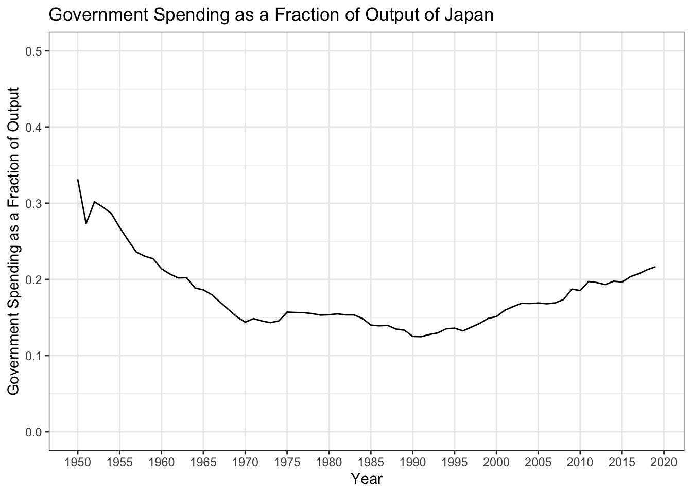
TFP_Growth_Rate_Japan <-
df_2 %>%
ggplot(aes(x = year)) +
geom_line(aes(y = phi)) +
labs(x = "Year",
y = "TFP Growth Rate",
title = "TFP Growth Rate of Japan") +
scale_y_continuous(limits = c(-0.1, 0.1),
breaks = c(seq(-0.1, 0.1, by = 0.05))) +
scale_x_continuous(limits = c(1950, 2019),
breaks = c(seq(1950, 2025, by = 5)),
minor_breaks = NULL) +
theme_bw()
TFP_Growth_Rate_Japan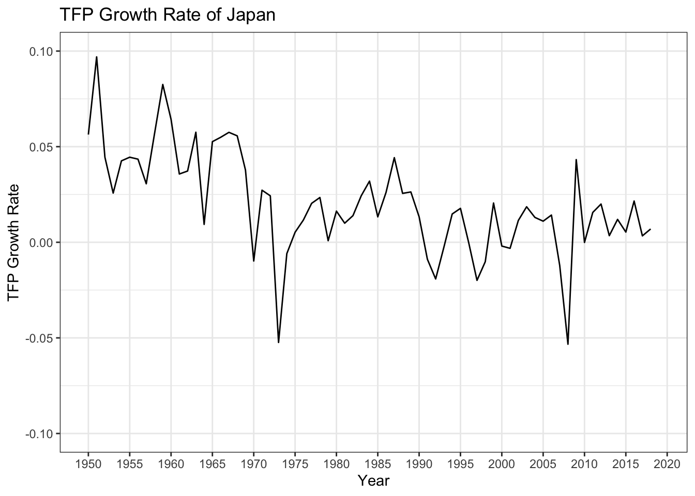
Compare to other periods, between 1950 and 1970 (i.e. after World War II and before the Bubble Economy), Japan had a high Population Growth Rate, an increasing Savings Rate, a high and declining Government Spending as a Fraction of Output, and a high TFP Growth Rate.
This indicates that Japan was recovering from World War II: People were having children as there were many casualties in World War II. People began to save more as the strict war-time economic regulations were lifted. The Japanese government was propelling the post-WWII growth.
After 1970, Japan’s Population Growth Rate declines steadily and has been negative since around 2010. Savings Rate declined; it plummeted before the Bubble burst; after 2010, it has been rising slowly. Government Spending as a Fraction of Output declined during the Bubble economy and rises after the Bubble economy. TFP Growth Rate oscillates, but from a grander picture, is steady.
Prediction of Real GDP per Capita According to the Solow Model
Based on model_inputs and other parameters provided by Professor Erin Cottle Hunt, we predict Japan’s Real GDP per Capita according to the Solow Model. We will also compare our prediction with the real data.
The Solow Model is
\[\begin{align*} Y = A\cdot K ^ \alpha \cdot N ^ {(1-\alpha)} \end{align*}\]
or
\[\begin{align*} y = A\cdot K ^ \alpha \cdot N ^ {-\alpha} \end{align*}\]
where \(Y\) is Output (Real GDP) and \(y\) is Output per Capita (Real GDP per Capita).
Set some parameters to the values provided by Professor Erin Cottle Hunt.
alpha <- 0.402 #Capital's Share in the Cobb Douglas Growth Function
delta <- 0.03 #Depreciation Rate
A_1950 <- 75.6 #TFP at 1950
N_1950 <- 84.3 #Labor at 1950
K_1950 <- 972362 #Capital at 1950Calculate annual Total Factor Productivity (\(A\)) of post-WWII Japan, according to the following formula.
\[\begin{align*} A_{t+1} &= A_t\cdot(1+\phi_t) \\ &= A_{1950}\cdot(1+\phi_{1950})\cdots(1+\phi_t) \end{align*}\]
df_2 <-
df_2 %>%
mutate(A = A_1950)
for (i in 2:nrow(df_2)){
df_2$A[i] =
df_2$A[i-1] *
(1 + df_2$phi[i-1])
}Analogous to what we do above, calculate annual Labor (\(N\)) of post-WWII Japan, according to the following formula.
\[\begin{align*} N_{t+1} &= N_t\cdot(1+x_t) \\ &= N_{1950}\cdot(1+x_{1950})\cdots(1+x_t) \end{align*}\]
df_2 <-
df_2 %>%
mutate(N = N_1950)
for (i in 2:nrow(df_2)){
df_2$N[i] =
df_2$N[i-1] *
(1 + df_2$x[i-1])
}Calculate annual Capital (\(K\)) of post-WWII Japan recursively, according to the following formula.
\[\begin{align*} K_{t+1} &= Y_t\cdot(1-\psi_t)\cdot s_t + K_t\cdot (1-\delta)\\ &= A_t\cdot K_t^{\alpha}\cdot N_t^{1-\alpha}\cdot(1-\psi_t)\cdot s_t + K_t\cdot (1-\delta)\\ &= (A_t\cdot N_t^{1-\alpha}\cdot(1-\psi_t)\cdot s_t)\cdot K_t^{\alpha} + (1-\delta) \cdot K_t \end{align*}\]
df_2 <-
df_2 %>%
mutate(K = K_1950)
for (i in 2:nrow(df_2)){
df_2$K[i] =
(df_2$A[i-1] *
(df_2$K[i-1] ^ alpha) *
(df_2$N[i-1] ^ (1-alpha)) *
(1 - df_2$psi[i-1]) *
df_2$s[i-1]) +
df_2$K[i-1] *
(1-delta)
}Prediction of Output per Capita
Calculate annual Output per Capita (Real GDP per Capita, \(y\)) of post-WWII Japan, according to the formula for the Solow Model.
df_2 <- df_2 %>%
mutate(y = A * K ^ alpha * N ^ (-alpha))Plot actual and predicted Real GDP per Capita of Japan.
Actual_and_Predicted_Real_GDP_per_Capita_of_Japan <-
df_2 %>%
ggplot(aes(x = year)) +
geom_line(aes(y = rgdpc_jpa,
color = "Actual")) +
geom_line(aes(y = y,
color = "Predicted")) +
scale_color_manual(values = c("Actual" = "blue", "Predicted" = "violet"), name = " ") +
labs(x = "Year",
y = "Real GDP per Capita",
title = "Actual and Predicted Real GDP per Capita of Japan") +
scale_y_log10(limits = c(2500, 60000),
breaks = c(seq(20000, 60000, by = 20000))) +
scale_x_continuous(limits = c(1950, 2025),
breaks = c(seq(1950, 2025, by = 10)),
minor_breaks = c(seq(1950, 2020, by = 5))) +
theme_bw()
Actual_and_Predicted_Real_GDP_per_Capita_of_Japan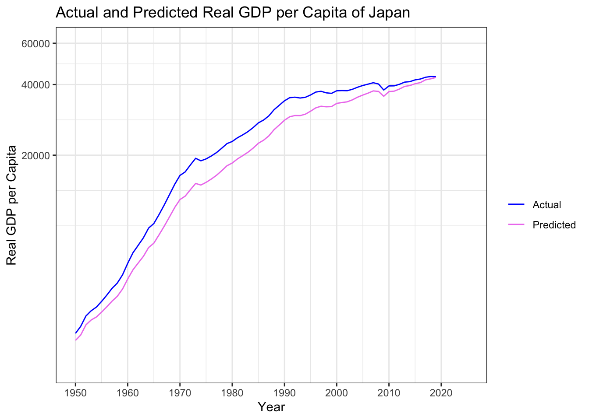
Prediction of Output per Capita Growth Rate
Calculate the actual and predicted annual growth rate of Real GDP per Capita.
df_2 <- df_2 %>%
mutate(y_growth_actual = rgdpc_jpa,
y_growth_predicted = y)
for (i in 1:nrow(df_2)){
df_2$y_growth_actual[i] = df_2$rgdpc_jpa[i+1]/df_2$rgdpc_jpa[i]-1
df_2$y_growth_predicted[i] = df_2$y[i+1]/df_2$y[i]-1
}Plot them.
Actual_and_Predicted_Real_GDP_per_Capita_Growth_Rate_of_Japan <-
df_2 %>%
ggplot(aes(x = year)) +
geom_line(aes(y = y_growth_actual,
color = "Actual")) +
geom_line(aes(y = y_growth_predicted,
color = "Predicted")) +
scale_color_manual(values = c("Actual" = "blue", "Predicted" = "violet"), name = " ") +
labs(x = "Year",
y = "Real GDP per Capita Growth Rate",
title = "Actual and Predicted Real GDP per Capita Growth Rate of Japan") +
scale_y_continuous(limits = c(-0.05, 0.15),
breaks = c(seq(-0.05, 0.15, by = 0.05))) +
scale_x_continuous(limits = c(1950, 2025),
breaks = c(seq(1950, 2025, by = 10)),
minor_breaks = c(seq(1950, 2020, by = 5))) +
theme_bw()
Actual_and_Predicted_Real_GDP_per_Capita_Growth_Rate_of_Japan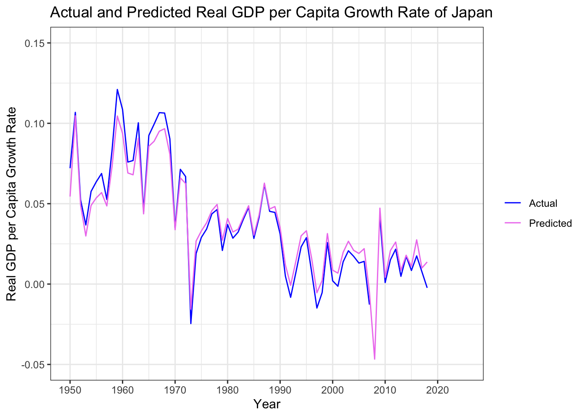
Conclusion
Compare the two plots above, the Solow Model predicts Japan’s Output trends quite accurately based on the parameters Professor Erin Cottle Hunt provided.
Section III. Counterfactual Solow Models of Japan Post World War II Economic Growth
In this section, we explore which factor mainly influences the exact trend (i.e. the kinks, the slope of each segment) of (Japan) economic growth.
To explore causality, we develop and look at several counterfactuals. When we change the value of a factor (for instance, hold this factor constant) and predict the growth trend, if the growth trend is very similar to the actual growth trend, then (changes in) this factor does not affect growth trend much.
On the other hand, if we change the value of a factor (for instance, hold this factor constant) and the prediction differs significantly from the actual, this factor affects growth trend very much.
We do not do tests of significance. We evaluate the predictions visually.
Counterfactual Models
Calculate the mean values of \(x\), \(s\), \(\psi\), and \(\phi\).
x_hat <- mean(df_2$x, na.rm = TRUE)
s_hat <- mean(df_2$s, na.rm = TRUE)
psi_hat <- mean(df_2$psi, na.rm = TRUE)
phi_hat <- mean(df_2$phi, na.rm = TRUE)Calculate Real GDP per Capita, holding Population Growth Rate at mean value. Among the parameters of the Solow Model, \(K\) and \(N\) are affected by the counterfactual.
The end years of the data series in df_2 are 2019, because model_inputs, provided by Professor Erin Cottle Hunt, has data that end in 2019.
df_2 <- df_2 %>%
mutate(K_counterfactual_1 = K,
N_counterfactual_1 = N,
y_counterfactual_1 = rgdpc_jpa)
for (i in 2:nrow(df_2)){
df_2$N_counterfactual_1[i] =
df_2$N_counterfactual_1[i-1] *
(x_hat + 1)
df_2$K_counterfactual_1[i] =
(df_2$A[i-1] *
(df_2$K_counterfactual_1[i-1] ^ alpha) *
(df_2$N_counterfactual_1[i-1] ^ (1-alpha)) *
(1 - df_2$psi[i-1]) *
df_2$s[i-1]) +
df_2$K_counterfactual_1[i-1] *
(1-delta)
df_2$y_counterfactual_1[i] =
df_2$A[i] *
df_2$K_counterfactual_1[i] ^ alpha *
df_2$N_counterfactual_1[i] ^ (-alpha)
}Calculate Real GDP per Capita, holding Savings Rate at mean value. Among the parameters of the Solow Model, \(K\) is affected by the counterfactual.
df_2 <- df_2 %>%
mutate(K_counterfactual_2 = K,
y_counterfactual_2 = rgdpc_jpa)
for (i in 2:nrow(df_2)){
df_2$K_counterfactual_2[i] =
(df_2$A[i-1] *
(df_2$K_counterfactual_2[i-1] ^ alpha) *
(df_2$N[i-1] ^ (1-alpha)) *
(1 - df_2$psi[i-1]) *
s_hat) +
df_2$K_counterfactual_2[i-1] *
(1-delta)
df_2$y_counterfactual_2[i] =
df_2$A[i] *
df_2$K_counterfactual_2[i] ^ alpha *
df_2$N[i] ^ (-alpha)
}Calculate Real GDP per Capita, holding Government Spending as a Fraction of Output at mean value. Among the parameters of the Solow Model, \(K\) is affected by the counterfactual.
df_2 <- df_2 %>%
mutate(K_counterfactual_3 = K,
y_counterfactual_3 = rgdpc_jpa)
for (i in 2:nrow(df_2)){
df_2$K_counterfactual_3[i] =
(df_2$A[i-1] *
(df_2$K_counterfactual_3[i-1] ^ alpha) *
(df_2$N[i-1] ^ (1-alpha)) *
(1 - psi_hat) *
df_2$s[i-1]) +
df_2$K_counterfactual_3[i-1] *
(1-delta)
df_2$y_counterfactual_3[i] =
df_2$A[i] *
df_2$K_counterfactual_3[i] ^ alpha *
df_2$N[i] ^ (-alpha)
}Calculate Real GDP per Capita, holding TFP Growth Rate at mean value. Among the parameters of the Solow Model, \(K\) and \(A\) are affected by the counterfactual.
df_2 <- df_2 %>%
mutate(K_counterfactual_4 = K,
A_counterfactual_4 = A,
y_counterfactual_4 = rgdpc_jpa)
for (i in 2:nrow(df_2)){
df_2$A_counterfactual_4[i] =
df_2$A_counterfactual_4[i-1] *
(phi_hat + 1)
df_2$K_counterfactual_4[i] =
(df_2$A_counterfactual_4[i-1] *
(df_2$K_counterfactual_4[i-1] ^ alpha) *
(df_2$N[i-1] ^ (1-alpha)) *
(1 - df_2$psi[i-1]) *
df_2$s[i-1]) +
df_2$K_counterfactual_4[i-1] *
(1-delta)
df_2$y_counterfactual_4[i] =
df_2$A_counterfactual_4[i] *
df_2$K_counterfactual_4[i] ^ alpha *
df_2$N[i] ^ (-alpha)
}Counterfactual Plots
Actual_and_Counterfactual_Real_GDP_per_Capita_of_Japan <-
df_2 %>%
ggplot(aes(x = year)) +
geom_line(aes(y = rgdpc_jpa,
color = "Actual")) +
geom_line(aes(y = y_counterfactual_1,
color = "Constant x")) +
geom_line(aes(y = y_counterfactual_2,
color = "Constant s")) +
geom_line(aes(y = y_counterfactual_3,
color = "Constant psi")) +
geom_line(aes(y = y_counterfactual_4,
color = "Constant phi")) +
scale_color_manual(values = c("Actual" = "blue",
"Constant x" = "pink",
"Constant s" = "orange",
"Constant psi" = "green",
"Constant phi" = "cyan"),
name = " ") +
labs(x = "Year",
y = "Real GDP per Capita",
title = "Actual and Counterfactual Real GDP per Capita of Japan") +
scale_y_log10(limits = c(2500, 60000),
breaks = c(seq(20000, 60000, by = 20000))) +
scale_x_continuous(limits = c(1950, 2025),
breaks = c(seq(1950, 2025, by = 10)),
minor_breaks = c(seq(1950, 2020, by = 5))) +
theme_bw()
Actual_and_Counterfactual_Real_GDP_per_Capita_of_Japan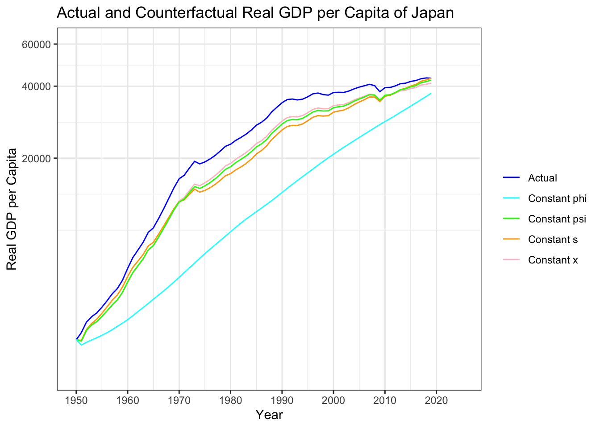
According to the plot above, if we hold TFP Growth Rate (\(\phi\)) constant, the prediction differs very much from the actual. Therefore, among Population Growth Rate (\(x\)), Savings Rate (\(s\)), Government Spending as Fraction of Output (\(\psi\)), and TFP Growth Rate (\(\phi\)), \(\phi\) is most accountable for the exact shape of Real GDP growth trend.
In other words, Total Factor Productivity (\(A\)) mainly influences the exact trend of (Japan) economic growth.
Holding All Except \(\phi\) constant
We also look at what the growth trend looks like, if we hold \(x\), \(s\), and \(\psi\) constant and let \(\phi\) be the only varying variable that influences Output.
df_2 <- df_2 %>%
mutate(K_counterfactual_5 = K,
y_counterfactual_5 = rgdpc_jpa)
for (i in 2:nrow(df_2)){
df_2$K_counterfactual_5[i] =
(df_2$A[i-1] *
(df_2$K_counterfactual_5[i-1] ^ alpha) *
(df_2$N_counterfactual_1[i-1] ^ (1-alpha)) *
(1 - psi_hat) *
s_hat) +
df_2$K_counterfactual_5[i-1] *
(1-delta)
df_2$y_counterfactual_5[i] =
df_2$A[i] *
df_2$K_counterfactual_5[i] ^ alpha *
df_2$N_counterfactual_1[i] ^ (-alpha)
}Actual_and_Counterfactual_Real_GDP_per_Capita_of_Japan_2 <-
df_2 %>%
ggplot(aes(x = year)) +
geom_line(aes(y = rgdpc_jpa,
color = "Actual")) +
geom_line(aes(y = y_counterfactual_5,
color = "All but phi Constant")) +
scale_color_manual(values = c("Actual" = "blue",
"All but phi Constant" = "purple"),
name = " ") +
labs(x = "Year",
y = "Real GDP per Capita",
title = "Actual and Counterfactual Real GDP per Capita of Japan") +
scale_y_log10(limits = c(2500, 60000),
breaks = c(seq(20000, 60000, by = 20000))) +
scale_x_continuous(limits = c(1950, 2025),
breaks = c(seq(1950, 2025, by = 10)),
minor_breaks = c(seq(1950, 2020, by = 5))) +
theme_bw()
Actual_and_Counterfactual_Real_GDP_per_Capita_of_Japan_2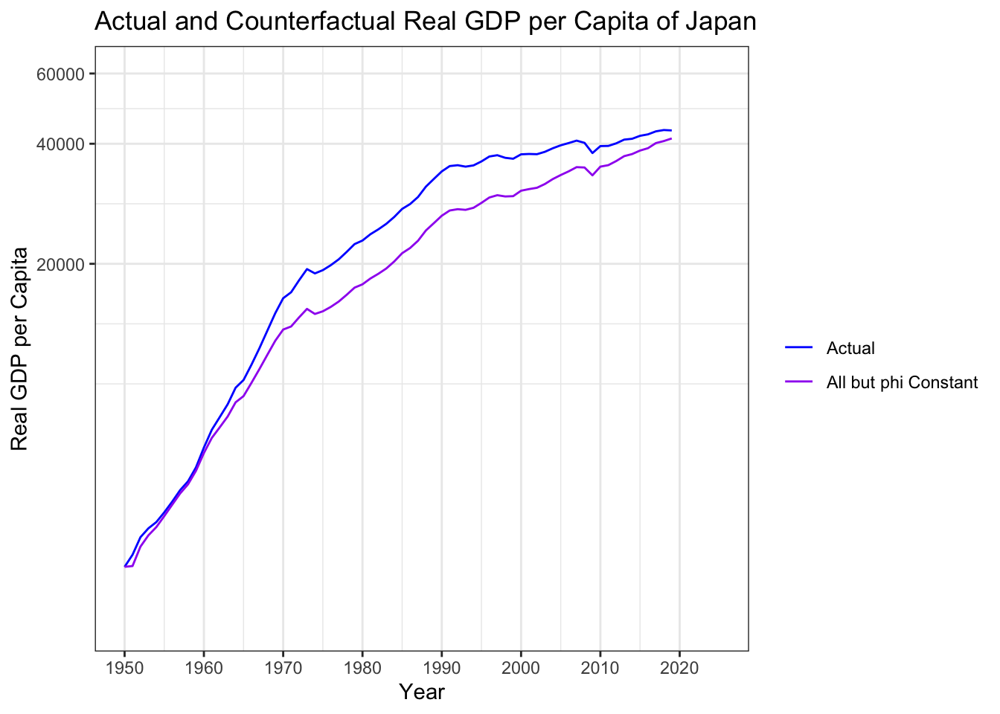
This verifies our conclusion that Total Factor Productivity (\(A\)) mainly influences the exact trend of (Japan) economic growth.
Section IV. What Post-1970 TFP Growth Rate Japan Needs to Have to Make Its Real GDP per Capita Converge to That of USA
Since 1970, Japan experienced the Bubble Economy and post-Bubble-Economy. Its Real GDP per Capita growth slows down.
Because TFP Growth Rate mainly influences the exact trend of (Japan), we will look at what post-1970 \(\phi\) should be for Japan’s Real GDP per Capita to converge to USA’s Real GDP per Capita.
Because we have to solve the recursive equation \(y=f(\phi)\), and because it is in general hard to solve recursive equations in R, we solve the equation only in Python.
The solution is:
phi_guess <- 0.01583375339852855Plot the simulation.
df_2 <- df_2 %>%
mutate(K_simulated = K,
A_simulated = A,
y_simulated = y)
for (i in (1971-1950+1):
nrow(df_2)){
df_2$A_simulated[i] =
df_2$A_simulated[i-1] *
(1 + phi_guess)
df_2$K_simulated[i] =
(df_2$A_simulated[i-1] *
(df_2$K_simulated[i-1] ^ alpha) *
(df_2$N[i-1] ^ (1-alpha)) *
(1 - df_2$psi[i-1]) *
df_2$s[i-1]) +
df_2$K_simulated[i-1] *
(1-delta)
df_2$y_simulated[i] =
df_2$A_simulated[i] *
df_2$K_simulated[i] ^ alpha *
df_2$N[i] ^ (-alpha)
}
Real_GDP_per_Capita_of_USA_and_Japan_S <-
df_2 %>%
ggplot(aes(x = year)) +
geom_line(aes(y = rgdpc_usa, color = "USA")) +
geom_line(aes(y = rgdpc_jpa, color = "Actual Japan")) +
geom_line(aes(y = y_simulated, color = "Simulated Japan")) +
scale_color_manual(values = c("USA" = "red", "Actual Japan" = "blue", "Simulated Japan" = "lightsteelblue"), name = "Country") +
labs(x = "Year",
y = "Real GDP per Capita",
title = "Real GDP per Capita of USA and Japan, with Simulation") +
scale_y_log10(limits = c(2500, 80000),
breaks = c(seq(20000, 80000, by = 20000))) +
scale_x_continuous(limits = c(1950, 2023),
breaks = c(seq(1950, 2025, by = 5)),
minor_breaks = NULL) +
theme_bw()
Real_GDP_per_Capita_of_USA_and_Japan_S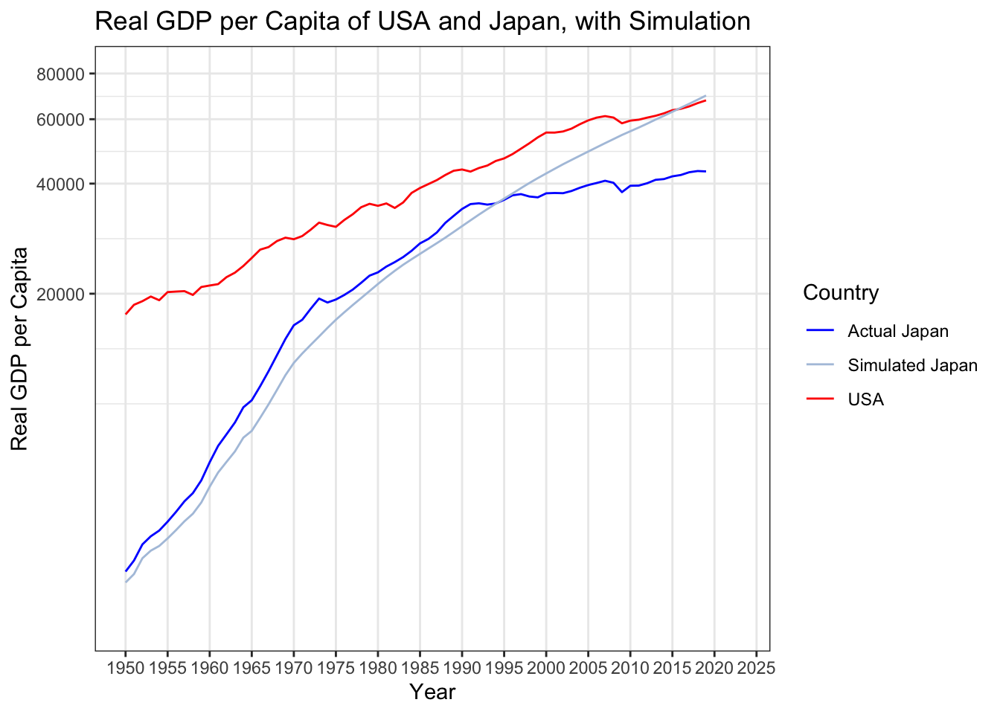